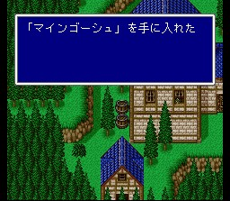

무아
사방이 산으로 가로막힌 마을로, 잠수함으로 조그만 호수 밑으로 가서 들어갈 수 있습니다. 분위기는 상당히 평화롭고, 주민들이 주는 정보는 뭔가 의미심장합니다. 아무튼 상당히 강력한 장비와 마법이 있으니 구합시다. 특히 흑마법 레벨5는 필수입니다. 그리고 잘 뒤져보면 마인고슈가 있습니다. 잊지 말고 입수합시다. 피아노도 있으니 빼먹지 마시구요.
도구상: 하이포션, 포션, 피닉스의 꼬리깃, 금바늘, 여인의 키스, 요술방망이,
안약, 해독제, 에텔, 성수, 코테이지, 거인의 약, 힘의 약, 스피드드링크, 프로테스드링크,
영웅의 약
무기상: 에어나이프, 엘핀보우
방어구상: 다이아의 방패, 다이아의
투구, 타이거마스크, 사제의 모자, 다이아의 갑옷, 다이아의 가슴받이, 빛의 로브,
다이아의 팔지
마법상: 백, 흑, 시공마법 레벨 4,5